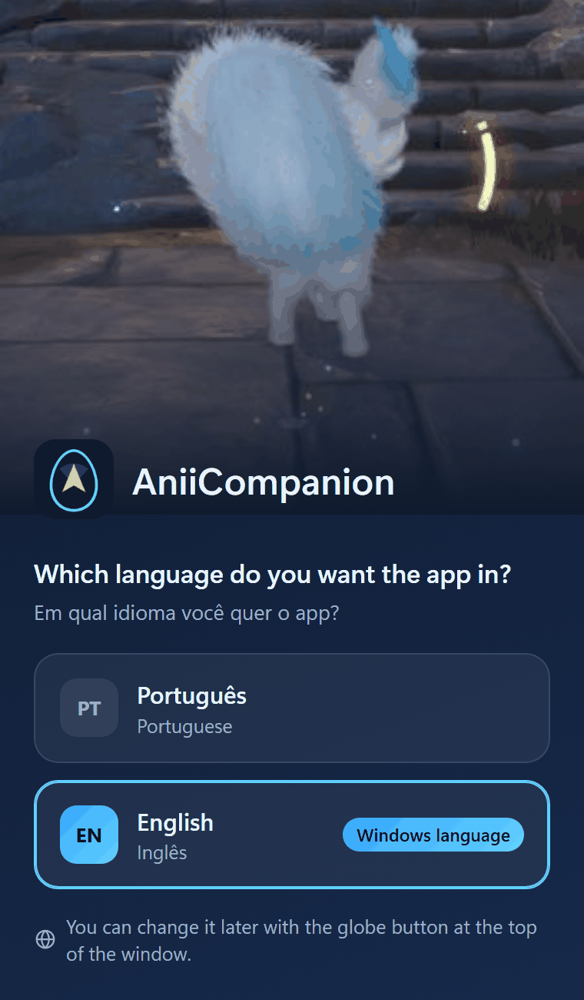
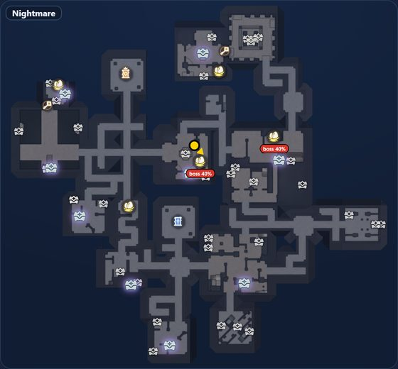

Your first match
From opening the game to seeing the map on screen.
Before you play
What to check before opening the game

The language choice, first run only.
- Aniimo in windowed or borderless fullscreenExclusive fullscreen cannot be captured, so the map does not work in it.
- AniiCompanion openYou can open it before the game. The app window shows “Waiting for Aniimo to open…”.
- Language, first run onlyThe app window opens asking “Which language do you want the app in?”. Click “Português” or “English”. To change it later, use the globe button at the top of the window.
- Internet, first run onlyThe app downloads the sanctum maps (“Preparing the maps…”) in a few seconds.
In the match
How the map shows up
The map appears inside the Egg Heist Lost Sanctum and, if the island is on, on the island.
- Open AniimoThe app window changes to “Finding out which sanctum you're in…”.
- Start the Egg HeistPick the mode in the game and start the match.
- Walk into the sanctum and move aroundThat is how the app learns which sanctum you are in. Outside it, the map stays hidden.
- Wait for the mapThe app window says “All good! Sanctum 20034 · Nightmare” (the number and difficulty change) and the map appears over the game.
- PlayOpened the bag, a chest or a menu? The map hides and comes back by itself. That is on purpose.
 123
123- You. The yellow arrow.
- Nest. The gold ring shows the chance of a nest there.
- Counters. Prismana and rich rooms.
Control window
The app window
The Map, Match aids and Friends tabs sit at its top, and the globe button switches the app language. The numbers below match the screenshot.

- Restart map. The circular arrow at the top. Use it if the map looks cut off or frozen. Nests, eggs and chests stay marked.
- Language. The globe switches the app between Português and English.
- Status. Tells you if all is well, with the sanctum and difficulty (“All good! Sanctum 20034 · Nightmare”), and reminds you that F1 shows or hides the map.
- Full screen | Window. Picks between a map over the whole game and a small map in a corner.
- How the map moves. “Rotates with you” or “Fixed map”. See the difference →
- Save report. Creates a .zip in your Downloads folder. Send it to whoever gave you the app.
Difficulty
The app reads the coin goal on the game panel and sets the difficulty itself. If it cannot, the sanctum itself tells it. You see it on the status card and on a label on the map.
Shortcuts
| F1 | Shows or hides the map. |
|---|---|
| Ctrl + F1 | Small window only: unlocks it so you can drag the bar and resize by the corner. Press again to lock it and clicks pass to the game. It remembers where you left it. |
| Ctrl + Shift + F1 | Restarts the map. Same as the “Restart map” button. |
While AniiCompanion is open, F1, Ctrl+F1 and Ctrl+Shift+F1 do not reach the game. If another program uses F1, such as aniimo-dungeon-map, close it first.
Two sizes
Full screen or small window?
You choose at marker 4 of the app window.

Full screen
The map sits over the game, centered on you, with the opacity you choose.

Small window
The whole sanctum in a corner. Move and resize it with Ctrl+F1.
Adjust window and opacity